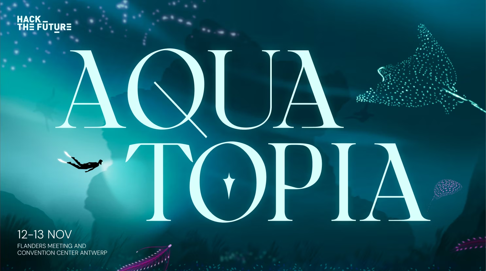
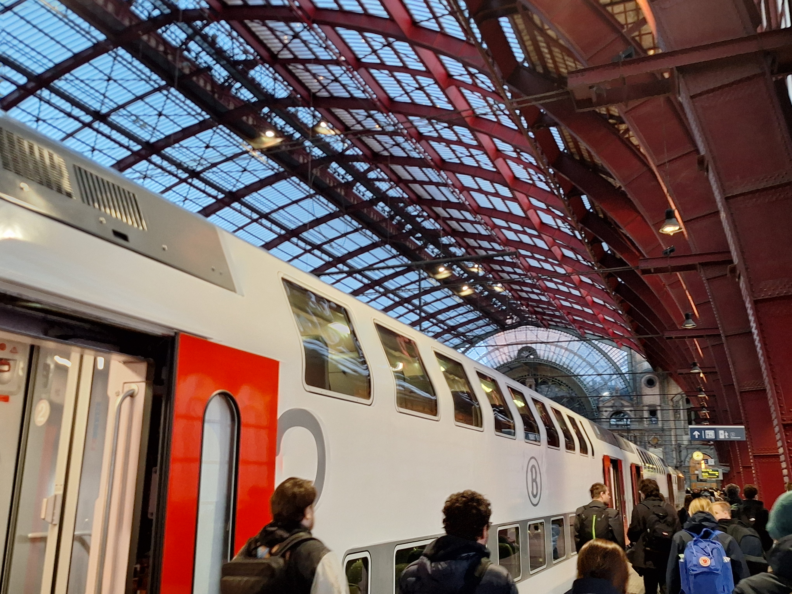
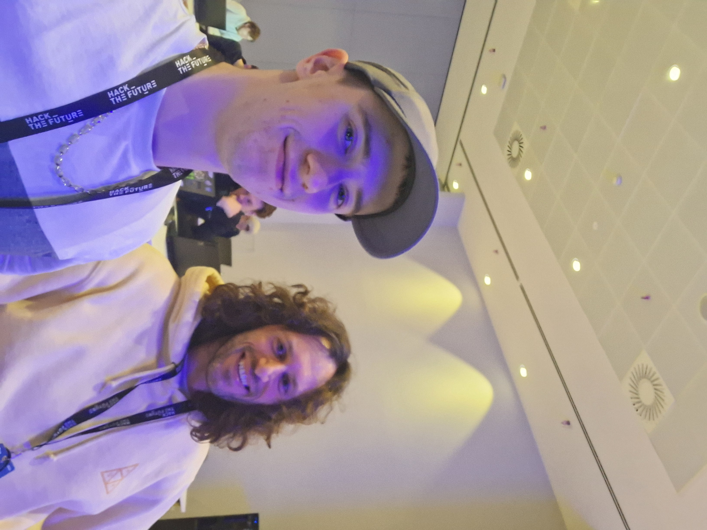

Participating in Hack The Future 2025: Aquatopia
I took part in Hack The Future 2025 - Aquatopia, a hackathon for IT and creative students in Antwerp.
Read
My team took on the challenge “Lost in the Deep: Code expedition to Atlantis”. Our team is the crew of a submarine that received a distress call from Atlantis.
It consisted some interesting and fun smaller challenges, from decrypting a cipher sent via an API to calculating the internal pressure after a submarine broke apart.


